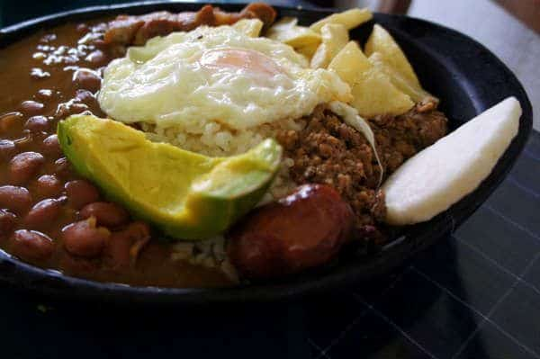
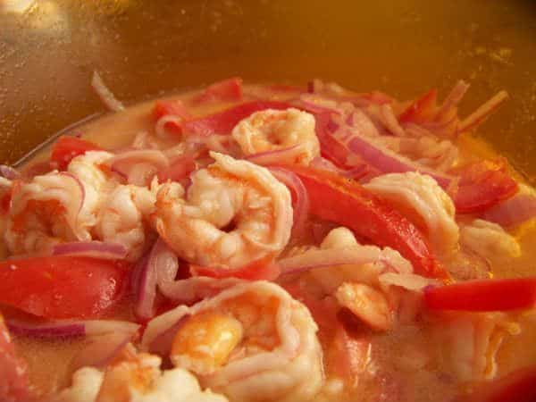
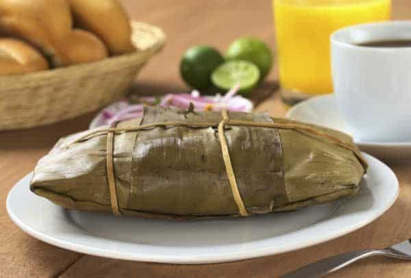
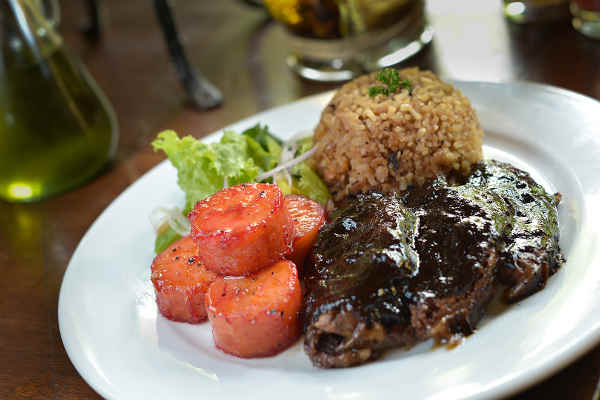
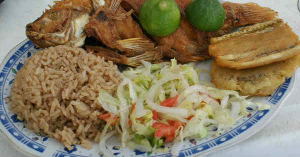
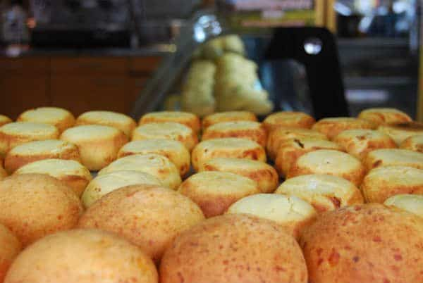
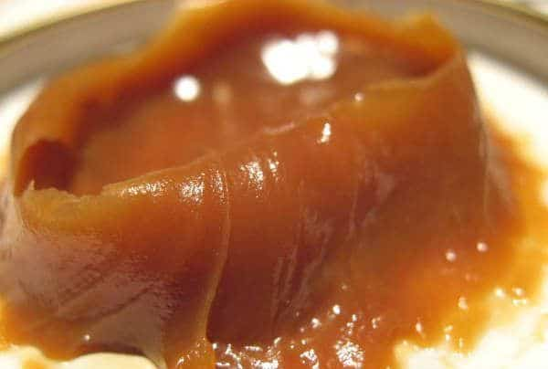

Last Updated on 28 junio, 2019 by Marta D
La comida típica de Colombia y las recetas colombianas están en auge y cada vez más de moda en otros países europeos y americanos.
Contents
- 1 Comida típica de Colombia – Bandeja Paisa
- 2 Comida típica de Colombia – Sancocho de Gallina
- 3 Comida típica de Colombia – Ajiaco Santafereño
- 4 Arroz Atollado
- 5 Sopa de Mondongo
- 6 Comida típica de Colombia – Ceviche de camarones
- 7 Tamales colombianos
- 8 Empanadas
- 9 Comida típica de Colombia – Posta Negra
- 10 Comida típica de Colombia – Arroz con Coco
- 11 Arepas
- 12 Almojábanas colombianas
- 13 Manjar blanco
La gastronomía colombiana es una fusión de la herencia indígena, de la influencia española y de las costumbres de la comunidad afrocolombiana asentada en el país. La mezcla, combinada con la riqueza en ingredientes exóticos, hacen que la cocina colombiana sea, al igual que ocurre con la gastrononía de países vecinos como Perú, única al paladar.
La gastronomía colombiana es muy amplia y variada. Por lo que hacemos una selección con los platos más representativos de la comida típica de Colombia:
Comida típica de Colombia – Bandeja Paisa

Considerado para muchos colombianos el plato nacional. La bandeja paisa es un plato de grandes dimensiones (por eso lo de bandeja) compuesto por ingredientes como chorizo, arroz, aguacate, plátano, frijoles, carne, panceta, tomate y huevos.
Es originario de la región paísa, donde se encuentra Medellín, y el eje cafetero. Y es el alimento que acompañaba al arriero en sus travesías. Un plato muy completo, aunque algo pesado, que reunía todo lo necesario para que el arriero aguantara largas jornadas de viaje. A día de hoy se ha extendido completamente por toda la cocina colombiana y se puede encontrar en casi todos los restaurantes del país.
Ver la receta de la Bandeja Paisa
Comida típica de Colombia – Sancocho de Gallina
Si hay un plato que compite en popularidad con la Bandeja Paisa, ese es el Sancocho de Gallina. También es un plato fuerte, que cuenta entre sus ingredientes con pollo, mazorcas de maíz, plátanos, papas y yucas. Se suele servir en dos recipientes, por un lado la sopa y por otro el pollo con los tropezones grandes, aunque también puede tomarse junto.
Es originario del Valle del Cauca (Cali) y es protagonista entre la comida típica de Colombia. Aunque existen variantes del mismo utilizando pescado o carne, el más extendido por Colombia es el valluno, hecho a base de gallina o pollo.
Ver la receta del Sancocho de Gallina
Comida típica de Colombia – Ajiaco Santafereño
Y el tercero en el podio es el Ajiaco Bogotano o Santafereño, junto con el Sancocho la sopa más típica de Colombia. Es muy parecido al Sancocho, solo que lleva tres tipos de papa y no yuca, y la mitad de las papas se deshace en la sopa para que quede más espesa.
Este plato es típico de Bogotá. Veremos que en otros países llaman Ajiaco a lo que en Colombia es el Sancocho y viceversa. Realmente son dos sopas muy sabrosas y de gran parecido.
Ver la receta del Ajiaco Santafereño o Ajiaco Bogotano
Arroz Atollado
Y seguimos con los platos fuertes de lacomida típica de Colombia. El concepto es similar a la paella española, un arroz con múltiples ingredientes hasta conseguir un plato contundente. Tradicionalmente lleva costillas de cerdo, tocino, pechuga de pollo y longaniza parrillera. Así que básicamente lleva carne.
En cada región colombiana varían ligeramente la receta, aunque sus orígenes o su tradición están más ligados a la cocina vallecaucana (Cali).
Ver la receta del Arroz Atollado
Sopa de Mondongo
Otra de las sopas más típicas de la cocina colombiana. El mondongo son las tripas de distintos animales y es el ingrediente principal de esta sopa a la que también se acompaña con otras piezas de carne, principalmente de cerdo. Un plato muy similar a los famosos callos españoles.
Es una comida típica de Colombia muy presente en la costa caribe ( Barranquilla), Antioquia ( Medellín) o el Altiplano ( Bogotá). Aunque se puede encontrar en cualquier lugar del país con mucha facilidad.
Ver la receta de la Sopa de Mondongo
Comida típica de Colombia – Ceviche de camarones

El ceviche colombiano es un aperitivo o entrante muy popular entre la comida típica de Colombia. Se diferencia del ceviche peruano en que el ingrediente principal son los camarones en lugar de pescado y en que al igual que en el ceviche ecuatoriano se añade tomate ketchup o tomate heinz.
En general es un plato muy típico de la costa pacífico colombiana, de la zona del Valle del Cauca (Cali) por ejemplo. Aunque pocos restaurantes en Colombia no cuentan con un buen ceviche de camarones en su carta. Es parte de la comida típica de Colombia por derecho propio.
Ver la receta del ceviche de camarones
Tamales colombianos

Otro aperitivo muy popular en Colombia. Hecho a base de masa de maiz rellena de carne de cerdo y de pollo con verduras, y envuelto en hojas de plátano, el tamal es una de las delicias colombianas más extendidas por el planeta.
En los tamales si que hay variedad, principalmente en los ingredientes de los rellenos. Así podemos encontrar tamales tolimences, santandereanos, antioqueños, de Córdoba, vallunos, de Nariño, de Cundinamarca, llaneros…
Ver la receta de los Tamales Colombianos
Empanadas
Las empanadas colombianas son parte de la cultura del país y de la comida típica de Colombia. En pocas calles de Colombia faltarán puestos ambulantes ofreciendo esta delicia cuya peculiaridad frente a otras empanadas es que la masa se hace a base de maíz. Los rellenos suelen ser de carne, pollo, o mixtos.
Cada región ha personalizado la receta, pero estemos donde estemos (Bogotá, Medellín, Cali, Cartagena…) si pedimos una empanada, será difícil que percibamos la diferencia.
Ver la receta de las empanadas
Comida típica de Colombia – Posta Negra

La Posta Negra es una popular receta de carne marinada con aspecto oscuro y con una mezcla de sabores e incluso un toque dulce. Es especialmente popular en la región caribe colombiana, y uno de los platos más típicos de ciudades como Cartagena, Barranquilla o Santa Marta
Ver la receta de la Posta Negra Cartagenera
Comida típica de Colombia – Arroz con Coco

Seguimos con recetas típicas de la región Atlántico y de la ciudad de Cartagena. Aunque la verdad es que el arroz con coco se ha convertido en uno de los acompañamientos más populares de todo el país.
Ver la receta de el Arroz con Coco
Arepas
Las arepas son junto con las empanadas un protagonista de la comida típica de Colombia que podemos encontrar en cualquier sitio, incluso en puestos ambulantes. Su receta puede incluir el ingrediente que se desee, aunque las más típicas llevan queso y choclo (maíz tierno)
Sucede algo similar a las empanadas, hay regiones donde se consume más un tipo de arepa que otro. Pero en cualquier sitio podemos encontrar unas buenas arepas de queso.
Ver la receta de las arepas
Almojábanas colombianas

Son el dulce o producto de panadería más popular de Colombia. Hechas a base de harina y queso, consiguen una textura esponjosa que hacen de este alimento una delicia de la que disfrutar en cualquier momento del día. Aunque son especialmente típicas en el desayuno.
Es difícil saber de donde son más típicas las almojábanas. Aunque tienen especial fama las de La Guajira y las de Cundinamarca.
Ver la receta de las almojábanas colombianas.
Manjar blanco

Un delicioso postre hecho a base de leche, panela y arroz. Es parecido al Toffe o al Dulce de Leche que se preparan en otros continentes. Para quienes le guste el dulce no pueden dejar de probar este postre de la comida típica de Colombia cuando visiten el país.
Es especialmente típico en la región del Valle del Cauca (Cali). Aunque como casi todos los platos de esta lista, totalmente extendido a la cocina colombiana. Uno de los postres colombianos más populares.
Ver la receta del Manjar Blanco
Se habrán dado cuenta que la gran mayoría de estas recetas colombianas son muy parecidas e incluso se llaman igual a las que hacen en otros países de latinoamerica. Esto es debido a que casi todas nacen de la influencia española. A partir de ahí cada país las personalizó con sus ingredientes y dio su toque a la receta.
excelente la cocina Colombiana,siempre que enseñemos hacerla con fórmula y procesos cuidadosos y el más olvidado el «Chontaduro»tortas,refrescos,chichas de este poder alimenticio dejando de lado malicioso de «AFRODISIACO»e infinidad de productos para la salud,jorge